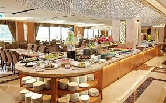
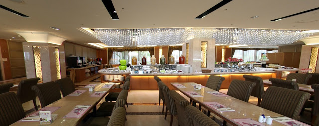
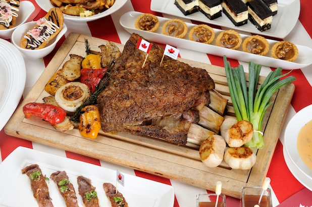

首頁
飯店內共規劃有 358 間可彈性規劃之各式客房，並設有充滿異國風味的義大百匯餐廳、天悅咖啡廳，另有多功能宴會設備之悅宴廳，時尚典雅的宴會廳
及方正格局一流設備之悅來會議廳，無論各式會議或教育訓練，皆能輕鬆完美進行，
讓您打造與眾不同的獎勵會議旅遊，而義大百匯餐廳內並設置有 VIP 包廂，讓貴賓能享有隱密的用餐環境，
式新古典建築及典雅室內風格呈現，與義大遊樂世界及義大世界購物廣場三方攜手，改變台灣的休閒場景，
為全台灣唯一集遊樂、購物、觀光之渡假休閒飯店。義大天悅飯店經國道十號仁武交流道下，



連到第二頁
連到第三頁
連到第四頁
連到第五頁